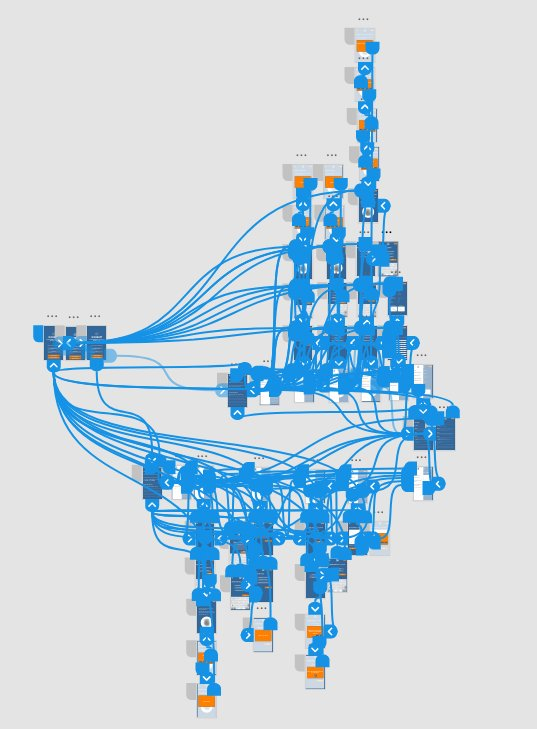
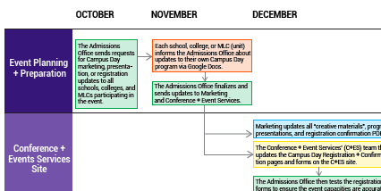

Hi! I'm Ky.
My name is Kylie (or “Ky”, either works) Wojciechowski, and, to answer your question, the trick to pronouncing my last name is to say “Where’s your house key?” quickly.
Now that that’s out of the way: I’m a user experience researcher and designer & technical communicator. My other interests include accessibility, information architecture, content strategy, and microcopy.
I’m in the second semester of my first year in the Master of Science in Information program at the University of Michigan’s School of Information, specializing in User Experience (UX) Research & Design. I have a Bachelor of Arts in Professional & Technical Writing from Saginaw Valley State University.

Here's some of my most recent work:
Contextual InquiryAs part of my Contextual Inquiry and Consulting Foundations course at the University of Michigan (SI * 501) in the fall of 2017, my three teammates and I conducted a series of contextual interviews with stakeholders at a local public library to get a better sense of issues that were present with their feedback collection methodologies and make recommendations.
Prototype Design
As part of my Introduction to Interaction Design course at the University of Michigan (SI * 582) in the fall of 2017, I created a design prototype for an app that functioned as a controlled access entry system for an apartment complex.
As part of my Introduction to Interaction Design course at the University of Michigan (SI * 582) in the fall of 2017, I created a design prototype for an app that functioned as a controlled access entry system for an apartment complex.
Info. Flow Diagram
After conducting a series of contextual interviews with stakeholders involved with the University of Michigan’s Campus Day event, I created an information flow diagram as a way to visualize how information was received, altered, and sent between various teams and departments at the University.
After conducting a series of contextual interviews with stakeholders involved with the University of Michigan’s Campus Day event, I created an information flow diagram as a way to visualize how information was received, altered, and sent between various teams and departments at the University.